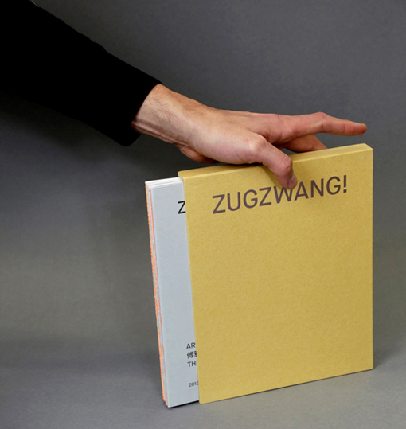
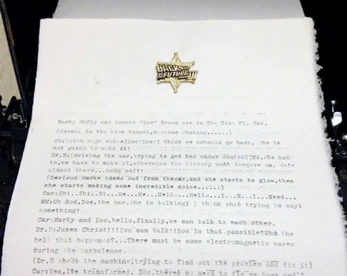

|
|
Begin Again |
Reset |
Working in progress |
Produktion: Ya-Wen Fu & Kai-Chun Chuang |
Solo Exhibition 2021 |
Solo Exhibition 2021 |
KCC UK ‘Begin Again’ |
Verortung |
|
|
Begin Again |
Reset |
Kaohsiung Local Hi 2022 |
Schlossmediale Werdenberg 2022 |
CYNETART 2020 |
“KUNST(RE_PUBLIC)“ 1.5.- 30.8. 2020 Venue: HALLE 14 - Zentrum für zeitgenössische Kunst Kunst ist für alle da. Ja! Ya-Wen Fu Space-in-Between Kunstfonds, staatliche Kunstsammlungen Dresden |
|  | |
“8.mai.2020 Museumsnacht in Halle und Leipzig“ Dieses Jahr komplett digital! Die Museumsnacht Halle-Leipzig wird 2020 nur virtuell stattfinden.HALLE 14 präsentiert zu diesem Anlass ein weiteres Werk aus der Sammlung des Kunstfonds der Staatlichen Kunstsammlungen Dresden, die Arbeit „Space In Between“ der Künstlerin Ya-Wen Fu. |
Publications / Editions Zugzwang! Published by tamtamART TAIWAN / 2019 Graphic design: www.michaelkewitsch.com Print run: 300 |
SUPER – TRAJECTORY Media / Lift Out of Balance 6.10.2019-3.3.2020 Venue: Tainan Art Museum Building 2 Aiming, but where to IV Interaktive Video-Installation and Performance site-specific work 2019 |
+ Anhydrite Biennale of Media Art 3,8.- 6.10. 2019 Barbarossa Cave, Germany (Barbarossahöhle im GeoPark Kyffhäuser, Rottleben, Kyffhäuserland (GER) *) Ya-Wen Fu Under Tension Mixed Media Installation and Performance 2019 version |
Artist in Residence 1.06 - 31.11. 2019 Venue: HELLERAU – European Center for the Arts, Dresden, Germany Ya-Wen Fu |
TWO PERSON EXHIBITION 가는 선 Fine Line Artist : Ya Wen Fu & Carsten Goering 2019 Venue: space xx , Seoul, Seouth Korea |
Kaohsiung Art awards 2019 2.2.-30.3.2019 Venue: The Kaohsiung Museum of Fine Arts (KMFA), Taiwan Ya-Wen Fu Under Tension Mixed Media Installation and Performance 2019 version |
inSonic 2018: Algorithmic Spaces 7.-8.12.2018 Venue: ZKM | Center for Art and Media Karlsruhe, Germany Ya-Wen Fu Under Tension Mixed Media Installation and Performance |
/
/
Solo exhibition 18.8-18.9 2018 Venue:Soulangh Cultural Park, Gallery A1, Taiwan Ya-Wen Fu Aiming, but where to l interactiv Multimedia video-installation, performance site-specific work 2018 |
f(r)iction in between 27.4-26.5 2018 Venue: Werkschauhalle - Leipziger Baumwollspinnerei, Germany Ya-Wen Fu Aiming, but where to Interaktive Video-Installation and Performance site-specific work 2018 |
|
|
Kunst trifft Gesundheit 10.1-31.12.2018 solo exhibition Venue:Three locations of AOK Nordost, Berlin Germany photography |
Osmosis
14-31.10 2017 Venue: Culture House 13 Muz, Szczecin, Poland Ya-Wen Fu With/Out You Video documentation |
/
|
|
BUBEC Pick'n'Mix 23.09.2017 Opening with Performance of Ya-Wen Fu Venue: Studio BUBEC, Praha, Czech Republic Ya-Wen Fu Aiming, but where to-work in process work in process in Bubec - Residency Program August -September 2017 |
Simulating, Object and Perception
11.08.2017 - 20.10.2017 Venue: Art Bank, National Taiwan Museum of Fine Arts Ya-Wen Fu Video documentation and photography |
/
 |
 |
Kunsthalle / Fuchsbau-festival 11.08.2017 - 13.08.2017 Ya-Wen Fu With/Out You Multimedia interactive Installation and Performance |
Elsewhere is Nowhere
19.01.2017 - 04.03.2017 Opening with Performance of Ya-Wen Fu Venue: Kunsthalle Exnergasse, WUK, Vienna, Austria Ya-Wen Fu Space-in-Between Multimedia interactive Installation and Performance, Video documentation Kunstfonds, staatliche Kunstsammlungen Dresden |
/
|
 |
Elsewhere is Nowhere 27.11.2016-19.02.2017 Venue: National Taiwan Museum of Fine Arts Opening with Performance of Ya-Wen Fu Ya-Wen Fu Space-in-between Multimedia interactive Installation and Performance, Video documentation Kunstfonds, staatliche Kunstsammlungen Dresden |
Unlimited Limitations |
/
|
|
solo exhibition 21. - 24. March 2016 With/Out You Multimedia interactive Installation and Performance, Video documentation Opening with Performance of Ya-Wen Fu Venue: Kunstkraftwerk Leipzig - KKW, Germany |
ISLANDS PLUS __Save our soul 16. 10- 18. 10 , 2015 Venue: Gyeonggi Creation Center, Korea Opening with Performance of Ya-Wen Fu Ya-Wen Fu With/Out You Multimedia Installation and Performance work in process |
/
|
|
5. Dresdner Biennale
21. / Kunstfestival ORNÖ 4– 20 September , 2015 Venue: ehemaligen Arbeitsanstalt Glockenturm der Garnisonkirche, Germany Opening with Performance of Ya-Wen Fu Ya-Wen Fu Under Tension Turm-Performance | WRO 2015 Résumé exhibition
WRO 2015 Résumé exhibition – other view
31. 8 – 4.10 , 2015 Venue: Centrum Sztuki WRO / WRO Art Center. Widok 7, Wrocław Ya-Wen Fu Space-in-Between Video documentation Kunstfonds, staatliche Kunstsammlungen Dresden |
/
|
|
Space in between“ Performance-Video documentation Ya-Wen Fu Space-in-between Video documentation Kunstfonds, staatliche Kunstsammlungen Dresden, Germany Media Art artist : Ya- Wen Fu Video recording artist : Pedro Carnicer Orueta Video editing artist: Pedro Carnicer Orueta |
WIN/WIN 2015 12. 6 - 21. 6 , 2015 Venue:HALLE 14 - Zentrum für zeitgenössische Kuns, Leipzig Germany Ya-Wen Fu Space-in-Between Multimedia Installation and Performance, Video documentation Kunstfonds, staatliche Kunstsammlungen Dresden |
/
|
|
"Test Exposure" WRO 2015 Biennale 13.5 -17.5 , 2015 Venue: Dworzec Świebodziki, Wrocław, Polen Ya-Wen Fu Space-in-between Multimedia Installation and Performance Kunstfonds, staatliche Kunstsammlungen Dresden |
Zukunftsvisionen 25.4 - 30.5 , 2015 Venue: OPEN ART LAB - GÖRLITZ IN PROGRESS, Germany Ya-Wen Fu Space-in-Between Multimedia Installation and Performance Kunstfonds, staatliche Kunstsammlungen Dresden |
/
|
|
ERTIBIL BIZKAIA 2015 more Informationen: http://salarekalde.bizkaia.net/default.asp Ya-Wen Fu Unter Spannung PERFORMANCE-DOKUMENTATION Media Art artist : Ya- Wen Fu Video recording artist : Pedro Carnicer Orueta Video editing artist: Pedro Carnicer Orueta |
Space-in-Between
solo exhibition 12.11 -19.11 2014 Venue: LABoral Centro de Arte y Creación Industrial, spain Ya-Wen Fu Space-in-Between Multimedia Installation and Performance, Video documentation Kunstfonds, staatliche Kunstsammlungen Dresden |
/
|
|
MASH UP I 17.5 -14.7 2014 opening: Samstag ab 18 Uhr Venue: ehemaligen Atelier-Atrium des DDR Malers Bernhard Heisig, Germany Ya-Wen Fu Unter Spannung Mixed Media , Performance, Installation 2014 |
Ya-Wen Fu Am I my grandma? photography 2014 |
/
|
|
Der Körper,in dem ich zu Hause bin Mixed Media Installation, Video and Performance 08:00 Minuten 2013 altonale Kunstpreis 2014 |
Cynetart Festival 14.11 -20.11 2013 Venue: Festspielhaus Hellerau,Dresden, Germany Ya-Wen Fu Der Körper,in dem ich zu Hause bin Mixed Media Installation, Video and Performance 2013 |
/
|
|
(con)temporary space-time 2012 Venue: AquabitArt gallery, Berlin, Germany Ya-Wen Fu I have a choice Video and Performance 2013 |
Viaggio in Italia / Italienische Reise 2010-2012 2012 Venue: Werkschauhalle Spinnerei, Leipzig, Germany Ya-Wen Fu Stadt Zeit Verschiebungen Videoinstallation 2012 |
/
|
|
TYPOSPHÄRE 2012 Venue:Galerie im Turm, Berlin, Germany Group tamtamART Berlin volimage interactive sound- Installation 2012 |
7th Digital Art Awards Taipei Venue:Songshan Cultural and Creative Park, Taiwan Selected Award Ya-Wen Fu Stadt Zeit Verschiebungen interactive videoInstallation 2012 |
/
|
 |
Res Obscura Venue:HGB Leipzig, Germany Ya-Wen Fu untitled video Installation 2012 |
Out of Place: An Ongoing Archive Venue: Corpo 6, Berlin, Germany Group tamtamART Berlin back to the future letter 2012 |
/
|
|
Viaggio in Italia / Italienische Reise 2010-2012 Venue:ATELIERFRANKFURT, Frankfurt, Germany Ya-Wen Fu Stadt Zeit Verschiebungen Stadt Zeit Verschiebungen 2013 |
Jeunesse Dorée Venue: tamtamART BERLIN Space, Berlin, Germany Ya-Wen Fu untitled video 2011 |
Best:1024x768px" / copyright©Ya-Wen Fu and VG Bild Kunst, All rights reservered. All work is copyrighted, please contact me for reproduction in any format. We cannot assume any liability for the content of external pages. Solely the operators of those linked pages are responsible for their content. |
t Berlin
Since 2007 Studies in Media Arts, HGB Academy of Visual Arts Leipzig, Intermedia Class of Prof. Alba D`Urbano
Exhibitions
2010 “Touch me!” Galerie Sylvia Bernhardt, Wiesbaden
2010 “Chain of Fools” HGB Academy of Visual Arts Leipzig
2009 “Untitled” Leipzig
2009 “Kampf” Berlin
2004 Installation “Through” Taipei, Taiwan
2002 “Motions and Images” Taipei, Taiwan
2002 “Spiel” Taipei, Taiwan 2001 “Mandarins” Taipei, Taiwan
2000 Exhibition of Graphic Design, Taipei, Taiwanm